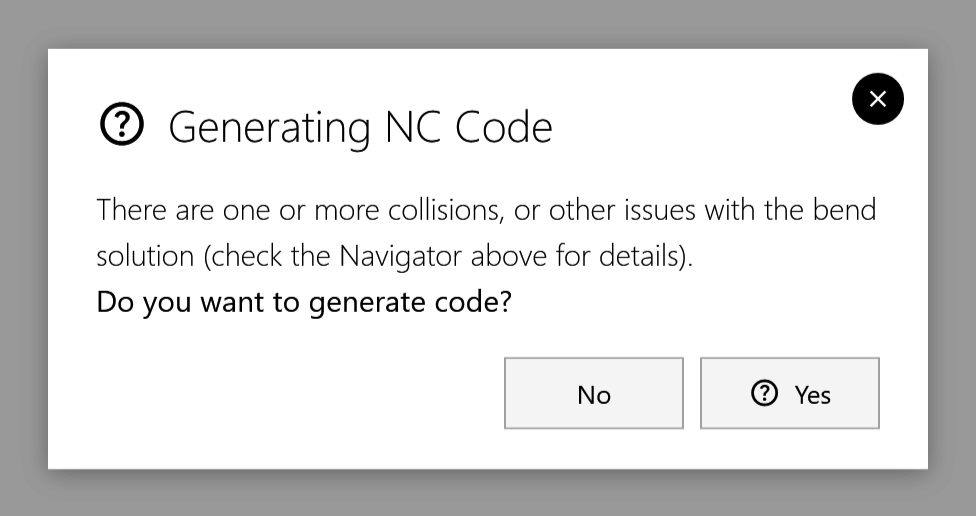

Writing the robot program
FRobot writes the cycle as a robot program in its own format, .rbc. A post-processor (RobotPost) then turns the .rbc into a FANUC program (.LS) for the controller.
Two ways to write it
nc code on the rail
-
Click nc code.
-
FRobot asks Generating NC Code … Do you want to generate code? Click Yes to write the program, or No.

|
Note
|
In this version the question always says there are collisions or other issues, even when the cycle is clean. Check the phase strip before you click Yes: when every cell is grey, the cycle is clean. |
Post-process in the Workflow window
Click Post-process in the Workflow window. It writes the program at once, without asking.
-
The Complete step: below Post-process a Complete step appears with the program’s file name. Click it to open the .rbc file, or to show it in Explorer.
-
A failed write: the step appears before the program is written, so check the Output NC window for the result.
-
A moved file: if the file has gone, FRobot says so.
nc code on the rail does not add the Complete step.
While it writes
The Output NC window shows the progress, then closes by itself after a few seconds:
| Message | Meaning |
|---|---|
Writing NC program… n / N waypoints |
Writing the .rbc |
NC file written: path / Running post-processor… |
The .rbc is done; RobotPost is running |
✔ Post-processed → …\A_<part>.LS |
The FANUC program is ready |
✔ Post-processor finished (exit 0). |
RobotPost ran without error |
✖ Post-processor exited with code N. |
RobotPost reported an error |
✖ Post-processor not found: path Set it in Settings ▸ Machine Defaults. |
Tell FRobot where RobotPost is: Machine Defaults |
✖ Write failed: … |
The .rbc could not be written, for example because the folder is read-only |
Before writing, FRobot does two things:
-
it switches off the continuous run, because the program is a single cycle;
-
it stops a post-processor that is still running from an earlier write.
Where the files go
| File | Where |
|---|---|
The .rbc program |
Output\<drawing>.rbc in the installation folder, named after the part’s drawing file (not a name typed in the bottom bar). An existing file of that name is replaced without asking. |
The FANUC programs (.LS) |
Next to RobotPost.exe, in a folder named after the part |
With the new RBC format switched on in Machine Defaults, FRobot writes the .rbc in that format and does not run the post-processor.
What the program holds
-
Waypoints: the program holds the named waypoints of the cycle, the TransitionSafe points of the swings included. Between them the controller’s joint moves repeat the swings you saw in the simulation.
-
Home is written at the start and the end, as StartHome and EndHome (Start Home and Drop Home in the new RBC format).
-
Speeds and blending (corner rounding) are not written; set them on the controller.